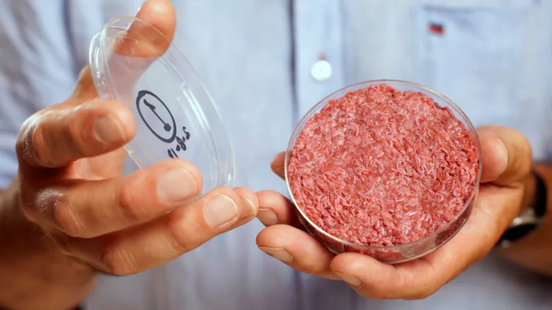

Hybrid products combine plant-based and cultured ingredients to develop tasty and sustainable products that will also potentially be cost-effective. This new product category shows many promises in terms of texture and taste, while adding an appealing juiciness. For instance, adding cultured fat to a plant-based chicken nugget could provide the genuine taste of chicken as well as improving juiciness and meatiness, while having an authentic texture, thanks to the plant-based proteins. The first proof-of-concept of hybrid products, chicken nuggets comprising 80% vegetable protein and 20% cultured fat, was unveiled in March 2019 by Peace of Meat, during a public event organised in Berlin. Looking at it this way, plant-based and cultured products are not mutually exclusive categories but actually form a highly promising complementary strategy – together, they have the potential to accelerate market entry by combining two different approaches to arrive at a perfect result, rather than perfecting just one approach completely.
The most pressing challenges currently facing cellular agriculture include research, regulatory aspects, and consumer acceptance. More publicly-funded, open-source research is required to address technical challenges such as growth mediums, cell lines, and consumer safety. The regulatory framework for cellular-agriculture products needs further elaboration in order to create a supportive environment for producers and consumers. In addition, consumers need to be informed about and updated on the potential benefits of, and current developments around, cellular agriculture in order to ensure widespread acceptance of these products. The CellAg Project focuses its efforts on key aspects within these three areas in order to help create encouraging conditions for introducing this new and promising method of protein production.